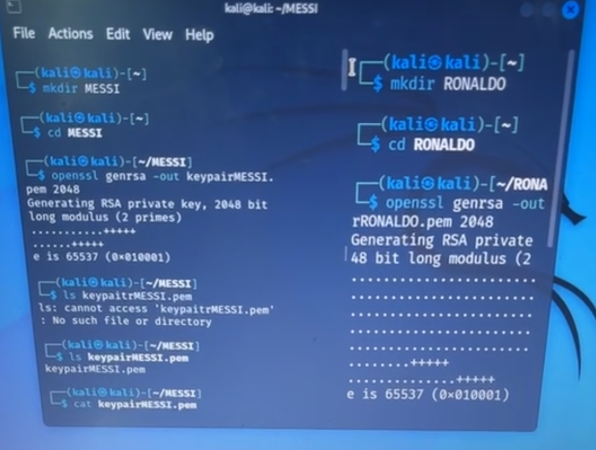

Generating separate RSA key pairs for a two party exchange
Set up two independent key environments so that each party in a message exchange holds its own private key, and confirmed the structure of the generated material.
what I did
- Created an isolated working directory for each party so that key material for one could never be read from the other's folder.
- Generated 2048 bit RSA private keys with openssl genrsa and confirmed the public exponent came out as 65537, the standard choice.
- Listed and opened the PEM file to see the encoded private key, which made the point concrete: this file is the secret, and it never leaves its owner.
- Hit a failed lookup from a typo in the filename, which taught me to verify a key file exists before assuming a generation step worked.
commands
$ mkdir MESSI && cd MESSI
$ openssl genrsa -out keypairMESSI.pem 2048
$ ls keypairMESSI.pem
$ cat keypairMESSI.pem

Why it matters: key separation is the first control in any PKI. If both parties share a directory or a key, non repudiation is gone before the first message is sent.